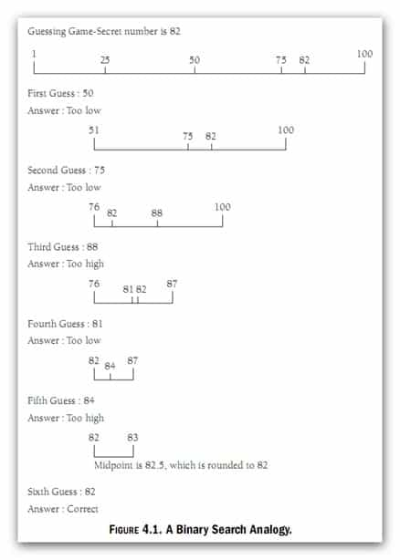

五分钟算法 - 二分法查找（Binary Search）
二分法查找（Binary Search）顾名思义就是利用“二分法”从一个特定的已排序序列集合（Sorted Array）中来查找指定大小或维度值的位置。但对于一个容量比较小的集合来说，一般通过完全“遍历”（时间复杂度 T(n) = O(n)）来查找特定元素的位置即可。
但对于一个容量较大的集合（几十万到几百万）来说，使用“遍历”的方式来查找特定元素其效率就显得比较低下了，O(n) 的时间复杂度并不能满足我们追求高性能算法的需求。而在这里通过使用二分法查找（Binary Search）便可以使元素的查找效率显著地增加。二分法查找的具体思路如下（这里使用数组进行举例）：
- 给定一个已排序好的数组（此处假定为递增数组）；
- 首先将目标值（Target）与数组的中间位置元素值（Middle）进行大小比较；
- 如果目标值（Target）小于中间位置元素值（Middle）则去掉数组的后半段，因为对于递增数组，目标值（Target）肯定在该数组的前半段；
- 再次将目标值（Target）与数组剩余部分的中间位置元素值（Middle）进行大小比较；
- 如果目标值（Target）大于中间位置元素值（Middle）则去掉数组的前半段，因为对于递增数组，目标值（Target）肯定在该数组的后半段；
- 依次重复进行上边四步的两种情况，直到找到目标值的位置；

上述算法的思路对于递减排列的数组也同样适用，下面给出一道例题，和该题对应的解决方案代码（Java 实现）：
给出一个已排序的递增数组 [1, 2, 3, 3, 4, 5, 5, 5, 6, 7, 8, 10, 11]，请利用二分法查找（Binary Search）给出该数组中数字5最后一次出现的位置。
解题代码，仅供参考：
public class Main {
public static void main(String[] args) {
// 给定数组；
Int [] sortedArray = {1, 2, 3, 3, 4, 5, 5, 5, 6, 7, 8, 10, 11};
// 调用方法；
System.out.print(Main.binarySearchLastPos(sortedArray, 5));
}
public static int binarySearchLastPos(int[] nums, int target) {
// 判断数组是否合法；
if (nums == null || nums.length == 0) {
return -1;
}
// 设置标志，初始化时start为0，end为数组长度减1，即分别指向头尾；
int start = 0, end = nums.length - 1;
// Main method (find the last position of the target)
// if start = 1, end = 2;
// if then nums[1] = target, mid = (start + end) / 2 = 1
// cause endless loop
while (start + 1 < end) {
int mid = (start + end) / 2; // 中间指针指向数组中间元素；
// Better usage, in case of over range
// int mid = start + (end - start) / 2;
// 根据三种不同情况分别移动首尾指针；
if (nums[mid] == target) {
start = mid;
} else if (nums[mid] < target) {
start = mid;
} else if (nums[mid] > target) {
end = mid;
}
}
if (nums[start] == target) {
return start;
}
if (nums[end] == target) {
return end;
}
return -1;
}
}
二分法查找（Binary Search）的时间复杂度：可以推算，一次 O(1) 的操作会将数组长度变为二分之一，两次 O(1) 的操作会将数组长度变为四分之一，三次 O(1) 的操作会将数组长度变为八分之一，n 次 O(1) 的操作会将数组长度变为2的 n 次方分之一，以此类推 “T(n) = T(n/2) + O(1) = T(n/4) + O(2) = …” 可以得到该算法的时间复杂度为 “O(logn)”，即最多执行 logn 次该算法便可得到最后的结果。